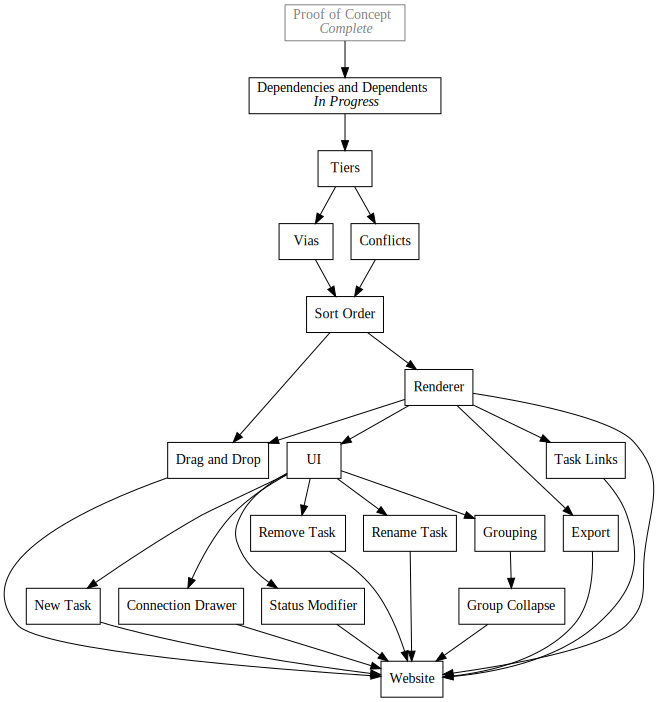

Day22 - Pando VNext
Getting started on the next version of Pando
2019-02-28

Today I started a rewrite of Pando which should enable me to build a UI for modifying todo trees instead of editing an opaque text format. The experience of building the first version of Pando was very insightful. It showed me that the concept was indeed useful, and that the core ideas were strong, but the user experience was somewhat lacking.
I decided that I wanted some sort of user interface for creating and modifying todo trees so that the experience is closer to a What You See is What You Get experience instead of just using a text editor.
To get to this point will take a while though. I will need to implement my own renderer for todo tree structures which lays out the tasks in a reasonable manner, build a UI for modifying the tree, and build some way to export the tree to an image format for embedding.
Technology wise I plan on using Rust most of the logic, but then fall back to HTML JavaScript for rendering the tree to an SVG and running the user interface. This should let me provide a website which will allow editing and creating todo trees.
The Renderer
Rendering graphs so that they look nice is pretty non-trivial. I have some ideas for how to simplify the problem however. First, the todo trees in Pando are a special subset of graphs called directed acyclic graphs or DAGs for short. This simply means that there are no loops in the graph. A loop would mean that some task could never be finished since it would be impossible to finish all of the dependencies before it.
This insight suggests a clean way to draw todo trees. All DAGs can separate their nodes into tiers where the first tier is all tasks without dependencies. The second tier is made up of all remaining tasks which depend only on the first tie. The third is all of the remaining tasks that depend on the second and optionally the first etc.
Separating tasks in this way ensures that all connections move downward through the tiers. So drawing a given tier would mean drawing a line from any of the previous tier tasks to the dependent tasks in the current tier from above, and drawing any connections to subsequent tiers below.
Another aspect of a clean graph is that there should be as few crosses in the connections as possible. I'm less sure of the best way to solve this problem, but given that my initial todo trees will be fairly small, I plan on implementing a fairly brute force approach which sorts tasks from top down. If all combinations of sort orders fail at some point down the list, I will back track and try the next permutation of tasks.
Similarly not all dependents for a given task will exist in the subsequent tier, so I will need to add a concept of vias which are simply paths between tasks in which a connection may pass.
Given the number of constraints on this system, I may look into using a SAT solver to come up with a valid configuration. This should simplify the computation and let me worry less about the actual algorithms required. I have not done much research here yet though.
UI
Building the renderer my self will let me implement my own UI for task manipulation. I plan on supporting a simple interaction model where tasks may be linked to other tasks by clicking and dragging. Similarly the status of a task may be changed by clicking on it. And lastly new tasks may be added or removed with an eraser tool.
Longer term, I would like to add a concept of Groups which would be a way to mark two or more tasks as grouped. When a given group is finished, those tasks will collapse into one meta task where all of the dependencies link to it instead of the contents. This would be a clean way to tidy up an old graph when a given milestone is reached.
Finally I would eventually like to allow the user to specify constraints manually about the placement of tasks. Even if a graph is laid out with no conflicts, it is very likely that a different orientation would look nicer. A drag and drop experience for manually reordering tasks might help the situation.
First Steps
I would like to build a way to port old Pando files to the new task structure, so my first step will be to implement a new data structure model which records dependencies and dependent tasks as well as calculates the tier of a given task. Then I will introduce the concept of vias through tiers and build a rudimentary renderer for manually laid out graphs. I will see where we are at from there! Its possible that doing more things automatically wont be necessary and proceeding to the UI would be the next step however I suspect having some automatic graph structuring will be desirable in which case I will look into algorithms for removing crossings in graphs and or look into using a SAT solver.
Much of today's productive time was spent planning next steps, so I will save my half baked code for the next time I move forward with this project.
Till tomorrow,
Keith